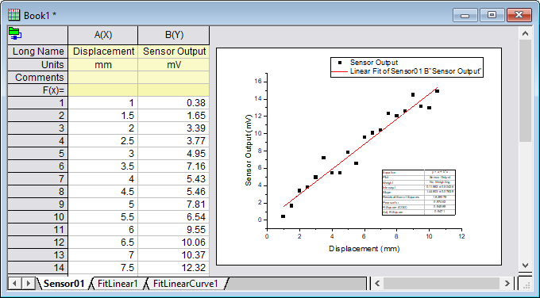

Mehrere Dateien in Arbeitsmappen importieren, die auf Grundlage der aktiven Arbeitsmappe geklont wurden
Import-Multi-Clone
Zusammenfassung
Origin bietet eine einfache Methode zum "Klonen" der Import- und Analyseoperationen in der aktiven Arbeitsmappe. Diese leistungsstarke Funktion ermöglicht Ihnen, eine Gruppe von Dateien schnell, mit nicht mehr als ein paar Klicks, zu verarbeiten.
Diese Funktion ist für die meisten von Origin unterstützten Importdateitypen implementiert, z. B. ASCII, CSV, Excel, und ist mit den älteren auf X-Funktionen basierenden Routinen kompatibel (Daten: Aus Datei importieren) oder die neueren Datenkonnektoren (Daten: Mit Datei verbinden). Dieses Tutorial setzt die neuere Konnektortechnologie ein, aber die Methoden sind grundsätzlich die gleichen wie für die älteren auf X-Funktionen beruhenden Importroutinen.
Was Sie lernen werden
Dieses Tutorial zeigt Ihnen, wie Sie:
- eine Prototyparbeitsmappe erstellen,
- die Arbeitsmappe durch Importieren und Analysieren einer Gruppe von ähnlichen Datendateien klonen,
mehrere ASCII-Dateien in geklonte Arbeitsmappen importieren.
Eine Prototyparbeitsmappe erstellen
In diesem Beispiel importieren wir eine Datei, erstellen ein Punktdiagramm, führen eine lineare Anpassung für die Daten durch und betten das Diagramm mit den den Anpassungsergebnissen in unsere Arbeitsmappe ein.
- Öffnen Sie ein neues Projekt. Wählen Sie im Menü Daten: Mit Datei verbinden: Text/CSV.
- Navigieren Sie zum Ordner <Origin-Verzeichnis>\Samples\Curve Fitting\ und wählen Sie die Datei Sensor01.dat.
- Übernehmen Sie alle Standardeinstellungen im Dialog CSV-Importoptionen und klicken Sie auf OK. Die Datendatei wird mit dem Arbeitsblatt verbunden.
- Klicken Sie im Arbeitsblatt auf den Kopf von Spalte B, um die Spalte auszuwählen, und dann auf die Schaltfläche Punktdiagramm.
- Markieren Sie Spalte B (Sensor Output) und wählen Sie Zeichnen: 2D: Symbol: Punktdiagramm, um ein Punktdiagramm zu zeichnen.
- Klicken Sie doppelt auf die X-Achse, um den Dialog Achsen zu öffnen. Klicken Sie auf die Registerkarte Skalierung, drücken Sie auf die Strg-Taste und wählen Sie sowohl Horizontal als auch Vertikal im linken Bedienfeld. Setzen Sie Neu skalieren auf Auto und klicken Sie auf OK.
- Wählen Sie im Menü Analyse: Anpassen: Linearer Fit, um den Dialog Lineare Anpassung zu öffnen. Setzen Sie Neu berechnen auf Auto (optional -- siehe Tipp unten) und klicken Sie auf OK, um den Fit durchzuführen. Antworten Sie mit Nein auf die Erinnerung und klicken Sie auf OK.
- Klicken Sie mit der rechten Maustaste auf die graue Fläche rechts vom Arbeitsblatt Sensor01 und wählen Sie Diagramm hinzufügen: [Graph1]. Das Punktdiagramm mit der linearen Anpassungskurve wird in Sensor01 als frei bewegliches Diagramm gezeigt.
-
- 
 |
In Schritt 7. wurden Sie aufgefordert, den Modus Neu berechnen auf Auto zu setzen. Ab Origin 2018b ist dieser Schritt nicht mehr notwendig, da geklonte Importe automatisch eine Neuberechnung auslösen. Wenn Sie eine der älteren Versionen von Origin benutzt haben, die den Dialog des ASCII-Imports enthalten, könnten Sie das gleiche Verhalten hervorrufen, indem Sie die folgende Skriptzeile in das Feld Skript nach jeder importierten Datei (unter dem Zweig Skripte) des ASCII-Dialogs eingeben.
run -p au;
-
|
Mehrere Dateien importieren und eine Analyse durch Klonen der Arbeitsmappe durchführen
In diesem Abschnitt des Tutorials "klonen" wir die mit Book1 verbundenen Operationen, einschließlich der grafischen Darstellung und Durchführung einer linearen Anpassung, durch das Importieren von weiteren Sensor-Datendateien.
- Klicken Sie bei aktiver Mappe Book1 auf die Schaltfläche Import klonen
 auf der Symbolleiste Import.
auf der Symbolleiste Import.
- Navigieren Sie erneut zum Ordner Curve Fitting und verwenden Sie die Shift- oder Strg-Taste, um die Dateien Sensor02.dat ... Sensor07.dat auszuwählen. Klicken Sie auf Datei(en) hinzufügen und dann auf OK. Alle Dateien werden verarbeitet und die sich ergebende Grafik und Anpassungskurve werden als frei bewegliches Diagramm in jedem Arbeitsblatt eingebettet.
-